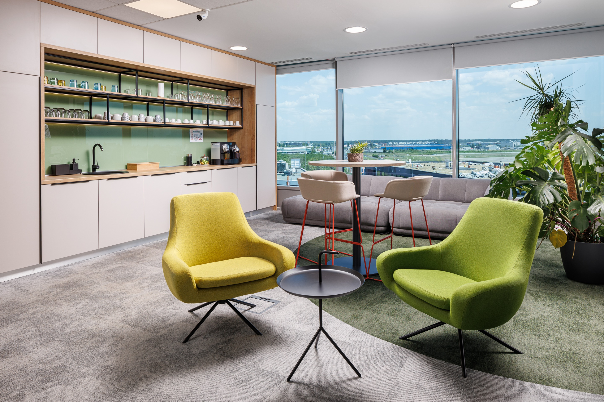

Expertise / Sustainability
Sustainability certifications and solutions for a sustainable office.
We help organisations turn sustainability goals into practical workplace decisions, from certification-ready specifications and responsible materials to healthier daily use and alignment with ESG strategy.
Certifications
Certification starts with clear, documented choices.
We support sustainability and wellbeing certification goals through early planning, responsible specifications, product documentation, and coordination with the project team.

Certified Direction
We help shape project decisions around certification ambitions such as sustainable materials, wellbeing, energy awareness, and responsible procurement.
Sustainable Solutions
We specify long-life furniture, reconfigurable systems, acoustic products, finishes, lighting, and workplace elements that reduce unnecessary replacement.
Sustainability In The Office
We design for everyday behaviours too: movement, comfort, shared resources, daylight, repairability, reuse, and spaces people continue to value.
ESG Alignment
We connect workplace decisions to ESG strategy by making environmental and social priorities visible in the way the office is planned and operated.
Certification Support
We translate certification goals into practical workplace specifications.
From product documentation and material selection to wellbeing criteria and responsible sourcing, we help the project team make choices that support recognised sustainability frameworks without losing design clarity.

Aligning With The ESG Strategy
The office can become a visible expression of ESG commitments.
ESG becomes meaningful in a workplace when it influences procurement, employee wellbeing, operational resilience, waste reduction, and the way decisions are documented. We help connect those priorities to the fit-out process.
Define The ESG Priorities
We clarify what matters most for the organisation: environmental impact, employee wellbeing, governance, reporting, or long-term asset value.
Translate Strategy Into Criteria
Targets become project criteria for materials, furniture, suppliers, adaptability, indoor comfort, and operational performance.
Select Responsible Solutions
We compare solutions by lifespan, documentation, maintainability, circular potential, and the way they support people at work.
Document The Decisions
Clear documentation helps the project team show how workplace choices support certification pathways and broader ESG commitments.
What clients usually ask about sustainable offices.
Yes. We support the project team with specification thinking, product documentation, material choices, and workplace decisions that can contribute to sustainability and wellbeing certification goals.
They can include durable furniture, modular systems, responsibly sourced finishes, acoustic and lighting solutions, reuse strategies, repairable products, healthier materials, and flexible planning that avoids unnecessary future waste.
The workplace can support ESG through environmental choices, employee wellbeing, responsible procurement, supplier transparency, adaptability, and documented decisions that reflect the organisation's wider strategy.